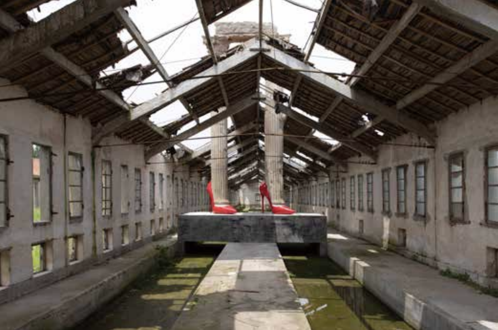

At the far western end of Chongming Island, an abandoned chicken farm has been kept almost intact and turned into a museum: no walls, no polished “white cube,” and just 20 visitors a day. This feature follows artist Xu Zhen’s experiment with an “unconventional museum” — wild, ruinous, and deliberately interesting — and asks what happens when a museum becomes, in itself, a contemporary artwork.

This story is not only about a new institution, but about an attitude toward art-making. Xu Zhen insists the museum is not a rural revitalization project and refuses to “comfort” visitors. The site’s roughness becomes part of the work: ruins, weeds, livestock sheds, and sculptures that appear to “grow” from roofs and grass. Under the pressures of the post-pandemic era and rapidly shifting cultural contexts, the museum proposes an old-fashioned idea in a new form: a collective place where artists can support each other — while also testing whether what we call “culture” can withstand time.
At the entrance, a long table holds oranges picked from nearby groves. Past the field ridges, a sheep shed and honking geese, the first “icon” you meet is a brown horse — with a QR code. It was shared widely online before opening day: “Remember to scan.”
Xu Zhen calls the museum “wild, ruinous, and interesting.” The site — an abandoned chicken farm — has been maintained with minimal renovation, kept safe but not polished. Visitors are capped at 20 per day. “You keep looking at the works, and consuming them,” Xu says. “But here you also feel you’re being looked at.”
For one artist, the site’s abandoned wastewater channels became ready-made molds: concrete set inside them, rising as towering column-like sculptures. Another built a camping-ground-like “Economic Zone” — tents sprawled across a lawn, exaggerating and parodying an urban lifestyle image circulating online.
The museum wants “unconventional imagination” from an unconventional place — and lets the friction between Chongming and Shanghai become part of the experience.
Xu Zhen argues that artists today face two questions: do works made under older contexts still matter, and how can one find a context that truly works now? In the museum’s long-term display “Landing 1.0,” sculptures are installed as if they had always belonged there — emerging from grass, roofs, and ruins — forming a layered sense of time.
The underlying test is simple but sharp: in an age of uncertainty, what can still be called “culture,” and will it endure?
This piece approaches contemporary art through place, infrastructure, and lived experience, rather than exhibition review. By following one artist’s institutional experiment from scene to system, it connects artworks, geography, and cultural anxiety into a readable public narrative.